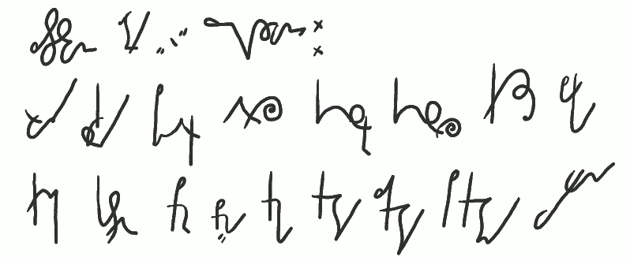
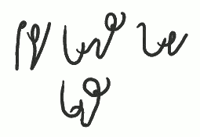
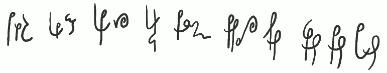

International
InternationalKurs SteMi - Lekcja 07
2013-04-25 | autor: flamenco108Zajęło mi to dużo czasu, bo znalazłem się w pewnym kłopocie (pomijając wiosenne przesilenie nastrojów). Otóż, co nie wymyślę jakiegoś wyrazu na przykład, to się okazuje, że to nie jest taki “goły” przykład, tylko od razu zahacza o inne reguły, których jeszcze Wam nie podałem. Oczywiście, co muszę zaznaczyć raz jeszcze i będę to powtarzał: SteMi jest systemem otwartym, jego reguły nie są ustalone w sposób skończony, stanowią raczej propozycję, niż nakaz. Jeżeli znajdziecie lepsze rozwiązanie jakiegoś problemu, zostanie to do systemu włączone. Taki stenograficzny OpenSource ;-).
Dziś lekcja trudna, bowiem dotyczy właśnie takiej “twórczej” reguły: przekrzyżowanego R.

Zastosowanie litery “R” przekrzyżowanej:
trwała krwisty Piotrek atrakcja konstruktor konstrukcja kryształ barka
kranik kastrat premier Brema krecha kręty zakręty pokrętny wyrwana
Przekrzyżowanie wydatnie skraca czas pisania, o ile jest dobrze wyćwiczone. Poza tym jest bardzo czytelne. Głoskę “R” wstawiamy pomiędzy krzyżujące się litery. Jest to raczej metoda, niż zasada. W przeciwieństwie do twórców starych podręczników wolę po prostu pokazać przykłady zastosowań, niż opisywać reguły, z których by wynikało, że moim zdaniem zastosowanie przekrzyżowanego “R” pomiędzy E i Ć/DŹ (śmierć, śmierdzi) nie ma sensu. Podobnie nie ma sensu krzyżować czegokolwiek z S/Z oraz C/DZ. Myślę, że po pierwsze, Wam może to wcale pasować (bo czemu nie? np. w wyrazie “serc"), a poza tym, jeżeli komu nie pasuje, to po prostu tego nie używa i już. Ja używam tej metody tak często, jak mogę, bo, jak powiedziałem wyżej - jest czytelna i szybka. W powyżej pokazanych wyrazach, proszę wycieczki, pokazałem wszechstronność zastosowania; zarówno w zapisie stenograficznym, jak i budowaniu grup spółgłoskowych. Znaczy, krzyżujemy, gdzie się da i co się da. Głoska R występuje dość często.
Mamy zatem wyrazy trwała i krwisty, gdzie mamy złożenia TRW i KRW. Te grupy znajdą też zastosowanie w stenografii dla oddania końcówek -trów i -krów, a dla odważniejszych też w rozpoczęciach takich jak jak traw-, trew-, tref-, kraw- etc. w ale o tym będzie też w dalszych lekcjach.
W słowie “konstruktor” jest błąd. Miało być KON-ST+TR, a nie KON-ST+KR. Moja bardzo wielka wina. O końcówkach obcych już wspominałem, będzie o tym więcej.

porysowana miarę koloryt skarpetki wyręby kaloryfery parking stenografia
wyrywny wyrywana przeglądarka śmieciarka programowanie skrypt skryptowy programista
Przypadkiem natrafiliśmy na jeszcze jeden “knyf” stenograficzny: litera P może być czytana jako PO, która to sylaba, szczególnie na początku, występuje dość często. Zatem wszelkie przekrzyżowania z P na początku wyrazu sprawdzamy, czy przypadkiem nie czyta się PO+R. Litera P za to pisana oddzielnie (z odstępem mniejszym niż międzywyrazowy) zawsze czytamy jako PO.
Kolejna ciekawostka pojawia się przy wyrazach wyrywny i wyrywana. Choć SteMi nie wymaga ścisłego trzymania się linii pisma, to przecież nieliczne wyrazy w języku polskim mogą powędrować w górę lub w dół kartki: wyrywany, wyrazy, narysowany itp. Dla zaoszczędzenia miejsca zatem, jeżeli pojawia się złożenie YRY, możemy zapisać je jedną kreską Y przekreśloną znakiem R, czyli krótką, ukośną kreseczką. Jak zobaczycie niżej, mnie, jako leworęcznemu, zdarza się pisać ową kreseczkę przechyloną w drugą stronę - ale nie ma to wpływu na czytelność, bowiem przekrzyżowanie zawsze oznacza R i tego należy szukać podczas deszyfracji tekstu.

Karakorum Kraków Wrocław Krosno Skaryszew
Powyżej kilka przykładów nazw własnych pisanych z przekrzyżowaniem. Nazwy własne (co będzie też omówione w sposobach wspomagania interpunkcji) oznaczamy dwiema kreseczkami pisanymi pod wyrazem. Jest to jeden ze sposobów.

karate marazm erem kara miara miary heretyk berek
Nie wszystkie połączenia XRX (dowolna litera, R, dowolna litera - w notacji stenograficznej X oznacza dowolną głoskę/literę, C oznacza spółgłoskę consonant, V oznacza samogłoskę vowel) mają sens, by pisać je z przekrzyżowaniem.
I tak np. ARA, XRĆ czytelniejsze są, gdy użyjemy po prostu znaku R. Ale oprócz połączenia YRY, specjalnemu przekrzyżowaniu ulegać może (pamiętamy: wolność, każdy robi, jak chce) połączenie ERE i ERĘ, jak widać na przykładzie poniżej.

erem heretyk berek sferę
Mnie w każdym razie tak pisać łatwiej, a i czyta się łatwiej. A to dlatego, że Ę rzeczywiście pochodzi od E, zatem nawet pomyłka w długości kreski w żadnym stopniu nie zmniejsza czytelności wyrazu.

porosty koromysło choroba
koromysło
W poprzednich lekcjach wspominałem już o wokalizacji. Przypomnę: wokalizacja to udźwięcznianie spółgłoski przez samogłoskę. W piśmie stenograficznym może to oznaczać (i tylko takie sytuacje wymagają omówienia) zmianę kształtu znaku samogłoski. Wokalizacja może być zagłosowa (czyli po samogłosce, np. KO, KA, KE), lub przedgłosowa (czyli przed samogłoską, np. OM, OH, OĆ, OSZ itp.). Sprawia to na początku problemy, tj. po kilkukrotnym zapisaniu danego wyrazu ręka “zapamiętuje” sztuczkę i już się nie myli. Możliwość wokalizowania niektórych znaków “z przodu i z tyłu” daje zwiększenie czytelności tekstu wynikowego (jestem o tym przekonany z praktyki), choć na początku sprawia pewną trudność.
Oto powyżej mamy przykład przekrzyżowania w słowie “koromysło” (skąd mi akurat taki wyraz przyszedł do głowy?). W zapisie u góry widać literę M bez zmienionego kształtu, połączoną z O lewoskrętnym. W zapisie na dole widać literę M z wokalizacją przedgłosową. Przekrzyżowanie akurat może tu sprawić kłopot i może sensowniej byłoby użyć tu po prostu literki.
 poróbstwo korbowód korporacja karkówka porozumienie propozycja a’propos wprost prost- porost
Oto zwracam uwagę na drugie zapisanie słowa “porost” - rzadko stosowane słowo, więc na drugim-trzecim miejscu w kolejce do rozwiązań. Pierwszy raz pisałem to ze dwa tygodnie temu. Dziś - napisałem to inaczej.
Na koniec jeszcze odpowiedź na ważkie pytanie: po co w ogóle stosować przekrzyżowanie (wiem, wiem, dla czytelności)? Oto istnieje poważne zagrożenie, że malutki zadziorek litery R (r) pomyli nam się z malutkim zadziorkiem litery I (i). Jest to wystarczający powód, choć przecież nie jedyny. Suma powodów sprowadza się do zaklęcia-mantry stenografów: czytelność.
Do zobaczenia w lekcji nr 8.
Dotychczas ukazały się lekcje:
2013-04-25 autor: flamenco108